xyfinz
Data analysis as x,y,f,i,n,z
2025-05-01
‘xyfinz’: A framework for data analysis projects
about me
- Economics prof by day, data analyst by (other) day
- Central European University (Vienna, AT) + Research job in Budapest
- Research on organizations w data from football, OSS, history
- Occasional consulting: “adult supervision”
Linkedin: linkedin.com/in/bekesgabor/ BlueSky: gaborbekes.bsky.social
about me
- Economics prof by day, data analyst by (other) day
- Central European University (Vienna, AT) + Research job in Budapest
- Research on organizations w Github data
- How teams formed, and their success
- Modelling OSS development process
- Data Analysis Textbook
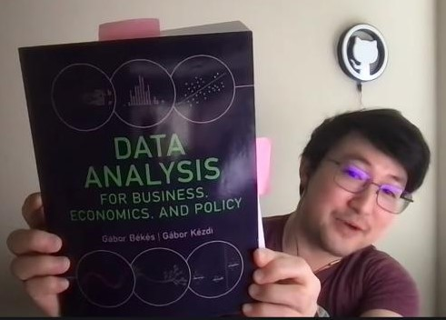
Linkedin: linkedin.com/in/bekesgabor/ BlueSky: gaborbekes.bsky.social
Data Analysis Textbook: gabors-data-analysis.com, repo: github.com/gabors-data-analysis/
(1.-2.) The x and y
The x and y
Understanding Relationships
- Data analysis is mostly about understanding a relationship between two variables
- We call them x and y
The x and y - Real World Examples (1)
How much more money do engineers with more experience make?
x = work hours
y = monthly salary
Do developers using AI have higher productivity?
x = use AI or not
y = PRs merged per week
The x and y - Real World Examples (2)
Is blood pressure affected by diet?
x = fruits+veggies consumed
y = blood pressure
How does mileage affect car value?
x = odometer reading
y = price
Patterns, prediction and causality
- Data does not tell a story
- You do
- Data Analysis must serve a purpose of understanding
- Data doesn’t tell stories on its own; you create the narrative through analysis.
Three Ways to Use x and y
Patterns: x ↔︎ y
Uncover associations between x and y
Prediction: x → y
Use x to predict y
Causality:x ⇒ y
Test if x causes y
The difference between x and y
Y = outcome, target (dependent variable)
X = predictor, causal variable (independent variable)
Key Points
- Data itself is neutral
- You decide what is x and y
- Driven by what you want to understand
x → y
The x and y: association
- Are people with higher N of commits per month, make more money?
- Are the consultancy professionals using AI have higher productivity?
- Is the blood pressure of people eating more fruits and veggies lower?
The x and y: association – setup
Association Analysis
Understanding patterns, comparing conditional means
Compare average y for different values of x
First step, works for any dataset
Reveals relationships without making strong claims
Helps identify potential variables of interest
Generates hypotheses for further investigation
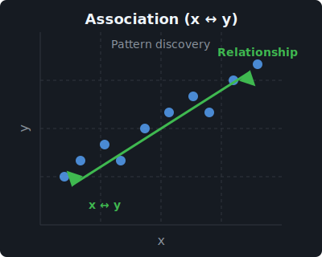
The x and y: prediction
- Could we use information on commit behavior to forecast salaries?
- Could we predict number of tasks finished knowing if AI was used?
- Does more fruits and veggies diet a good predictor of blood pressure?
The x and y: prediction – setup
Prediction = Modelling for the future
Take the data we have to build model(s) = training data
Train data: x and y known
Use the model in a data in the future = live data
Live data: x known, y predicted
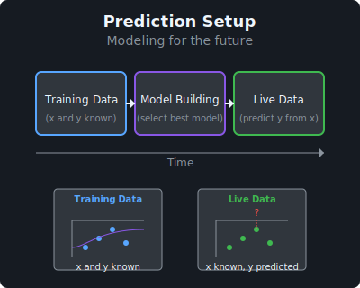
The x and y: causality
Does having more commits per month lead to getting a higher salary?
Does allowing workplace access to AI, has an effect on number of task professionals finish?
Does changing diet to more fruits and veggies cause a bp decline?
Lead. Make. Effect. Affect. Cause. == causal words – use with care.
The x and y: causality – setup
Causal inference
Causal inference * understanding the what if question * Causality = Is room for an intervention (action) by an agent
Actions - Commit more frequently / Require a minimum amount of change per commit - Allow/Prohibit access to ChatGPT/GH copilot - Change diet
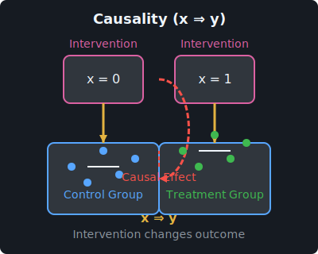
Prediction vs causality
Approach vary…
- Prediction – what to expect given observed values…
- Causality –what to expect, if we intervened
… but intertwined
- For causality you still want to predict | on your action
- For prediction, understanding underlying causal patterns → stable models
Many x
There could be many X variables
Prediction
- More predictors → better model
Causality
- Account for variation across groups
(3.) f()
y~f(x) is the relationship between y and x
Thinking about the nature of relationship
- Data analysis compares mean y conditional on observable x:
- Average salary by years of experience:
- Tasks completed by AI usage:
- f(x) defines how x relates to y - we can model this relationship in different ways
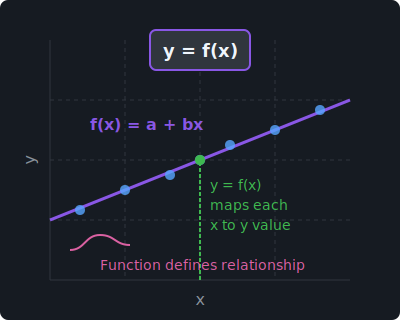
The relationship: y~f(x): Examples
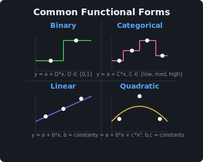f(x): Binary Relationship
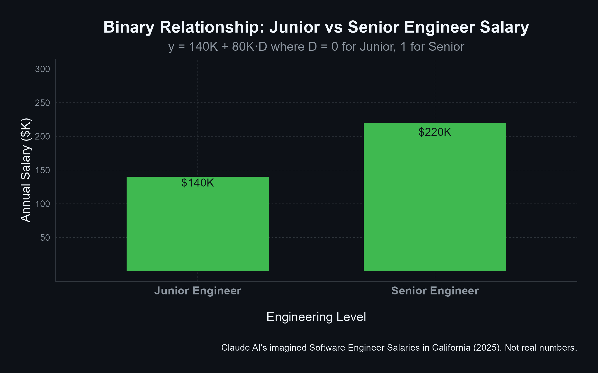f(x): Categorical Relationship
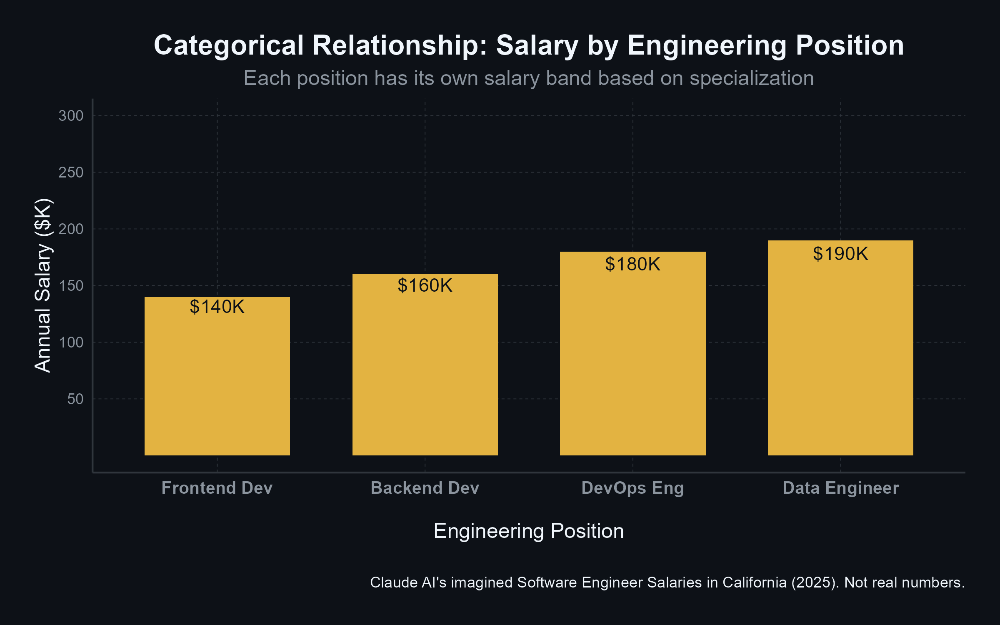f(x): Linear Relationship
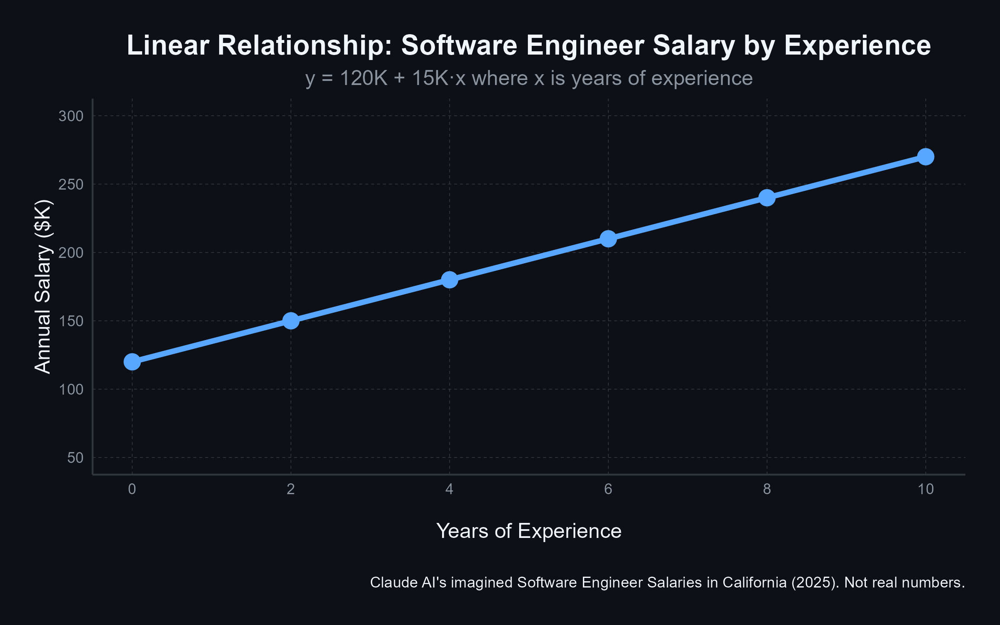f(x): Quadratic Relationship
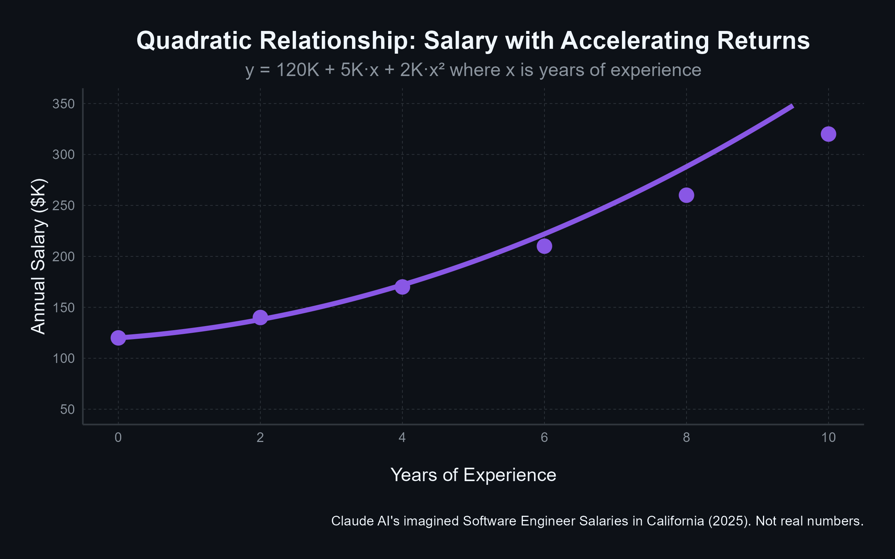When f(x) matters?
- Prediction: high – precise f(x) helps make better predictions (mo’ money)
- Patterns of association: medium – yes but focus on core relationship
- Causality: low – simplicity valued
(4.) i
What is an observation i
i= an observation
Data often generated as transaction, interaction, response
- A commit pushed to a repo , i= a commit
- (by account, repo, timestamp)
- Survey answers to a questionnaire, i= respondent
Task
- Understand and decide what we can do
What is an observation i – analyst decision
- Analyst might aggregate
- Decision on how to aggregate is analyst’s decision (~ RQ, legal, technical)
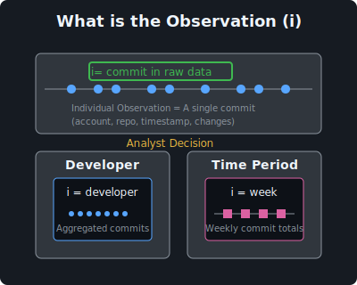
(5.) N
N is the size of the dataset
How many observations we have for the analysis.
Size determines what we can expect from analysis
N is the size of the dataset
Dataset size matters greatly for prediction
- Large data – easier building predictive models
- We have more chance finding patterns
Dataset size also helpful – gives us more certainty
- Causal questions
- Experiments
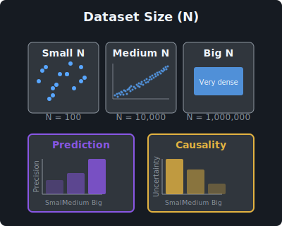
N is the size of the dataset – who decides
Dataset size given
- All repos on Github as this second
- All custom declarations entering LA sea port in 2024
Dataset size decided
- Scope of a developer survey, N of respondents
In between: sample design
- How many years to include
- Exclude repos<5 commits, repos, devs of large orgs
(6.) Z
Z is what confounds the causal analysis
- People who eat more veggies (x) have lower blood pressure (y)
- Causal claim: let us make people eat more veggies to get lower bp
But:
- People decide on many things = self-selection into action
- They may run. People who run also eat more veggies, and have lower bp
- They may eat less fries. Fat is bad for arteries, higher bp
- They may go to doctor that gives them pill to lower bp
Z is what confounds the causal analysis
- People who eat more veggies (x) have lower blood pressure (y)
- Causal claim: let us make people eat more veggies to get lower bp
Confounder (z) are variables to prevent such claim
- In observational data: often
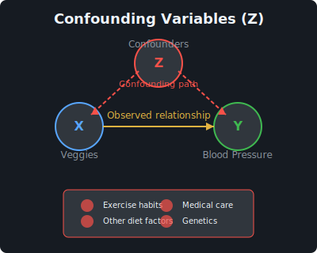
x,y,f,i,N,z – not independent
Framework Components Interact
- Each element influences the others
- Changes to one affect analysis strategy
x ↔︎ y ↔︎ f ↔︎ i ↔︎ N ↔︎ z
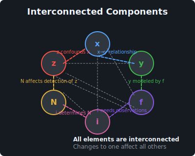
Larger N → more complicated f(x)
- Big data
- More observations, more variables
- f(x), f(z) can be more nuanced
- Machine learning.
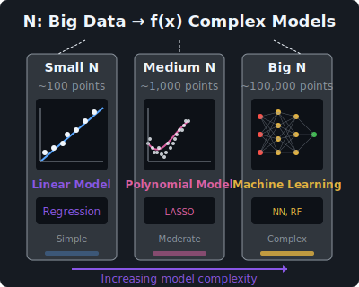
i,N → x,y
The type of observations we have determine what analysis we can do
Commit level: developer background and behavior
Commits in city: georgraphy of OSS
Commits per day: holidays and OSS
More detailed observations often allow for better identification of causal effects
xyfinz
- When designing data analysis projects, the key decision points are to understand what is x,y,f,i,N,z
I’m around:
Linkedin: linkedin.com/in/bekesgabor/ BlueSky: gaborbekes.bsky.social
Check out
Data Analysis Textbook: gabors-data-analysis.com, repo: github.com/gabors-data-analysis/
A case study: team geography and success: Evidence from Github
A case study: team geography and success: Evidence from Github
(with Miklós Koren, Julian Hinz, Aaron, Lohmann)
Are concentrated teams more successful?
- Multinational enterprises
- Multi-location teams
- Cost of communication
Setup, data
Setup
- Free open source software
- Developers
- Git as distributed version control system, Github as development platform
Cool original data, where we can observe
- Developers and their activities
- Developer commit location
- Repo success (stars, downstream use)
Thanks to to Kevin Xu at Github, Inc.
xyfinz
- x= measure of geographic concentration
- y= success of repos
- f= (complicated)
- i=each repo (repo-time)
- N=millions
- z=quality, experience of coders, language, topic
Finding
- Teams with more dispersed location of developers tend to be more successful.
- Great deal of selection in matching
- Diverse teams work on more promising ideas | talent
Check out my textbook feel free to reach out
I’m around:
Linkedin: linkedin.com/in/bekesgabor/ BlueSky: gaborbekes.bsky.social
Check out
Data Analysis Textbook: gabors-data-analysis.com, repo: github.com/gabors-data-analysis/

‘xyfinz’ – Data Analysis for All with Gábor - GitHub Edition - 2025-05-01